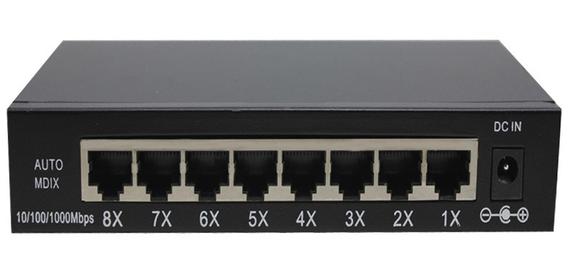

Note: The header looks better when you open the page wide
Modems means 'modulator demodulator' and is a device that converts
(i.e. modulates) a computor's digital signal into an analogue signal for
tranmission over an existing telephone line. It also does the reverse
process, in that it converts analogue signals from a telephone line into
digital signals (demodulates) to enable the computer to process the data.
Modems are essentially used to allow computers to
connect to networks for example, the internet) over long
distances using the existing telephone networks.
Dial-up modems operates a tranmission speeds of about 60 kilobits
per second, which is extremely slow by today's standards.
Hubs are hardware devices that can have a number of devices or computers connected to them. They are often used to connect together a number of devices to form a LAN - for example, a star network. It's main task is to take any data packet (this is a group of data being transmitted) received at one of it's ports and boardcast it to every computer in the network. This is essentially means that using a hub is not very secure or efficient method of data distribution.

Switches are similar to hubs but are much more effcient in the way that
they ditribute data packets. As with hubs, they connect a number of devices
or computers together to form a LAN.
However, unlike a hub, the switch checks the data packet recieved and
works out its destination address (or addresses) and sends the data to the
appropriate computer(s) only. This makes using a switch a more secure
way of distributing data.
Each devices or computer on a network has a media access control (MAC)
address that uniquely identifles it. Data packets sent to switches will have
a MAC address identifying the source of the data and additional addresses
identifying each devices that should recieve the data.
Bridges are devices that connect one LAN to another LAN that
uses the same protocol (communication rules). They are often used
to connect together different parts of a LAN so that they can
function as a single LAN.
Bridges tend to be used to interconnected LANs (or parts of LANs) since sending out every data
packet to all possible destinations would quickly flood larger networks with unneccesary traffic.
For this reason a router is used to communicate with other networks, such as the internet.